충남대학교 컴퓨터공학과 이성호 교수님의 "프로그래밍 언어 개론" 강의를 필기한 내용입니다.
다소 잘못된 내용과 구어적 표현 이 포함되어 있을 수 있습니다.
수학에서의 함수와 차이점
- 공통점 : 값을 전달하면 결과를 반환한다는 것
- 차이점 : 수학에서는 함수를 정의하면 그 함수에 동일한 값을 전달하면 항상 동일한 값을 반환하지만 프로그램에서는 부작용이 있을 수 있어 같은 값을 전달해도 다른값을 반환할 수 있다
- 부작용을 예로 들면 전역변수를 사용할 때 전역변수의 값에 따라 다른값을 반환 가능
High order, First order
- 서로 반대의 개념
- First-order function : c언어에서처럼 함수를 인자로 받지도 못하고 함수를 반환하지도 못하는 특성
- 함수를 객체 / 변수와 별도로 취급함
- Second-class citizen이라고도 한다
- 변수와 별도로 취급하기 때문에 변수를 저장하는 추상 메모리와 별도로 추가로 함수를 저장할 추상 메모리가 필요함
- High-order function : 함수형 기능을 지원하는 언어처럼 함수를 하나의 객체로 취급해 인자로 받을 수 있고 함수를 반환하는것도 가능
F1VAE
- first-order를 지원하는 함수 정의문 하나와 그 뒤에 표현식 이 나오는 예시언어
- first-order이기 때문에 함수를 저장할 별도의 메모리가 필요한데 그 함수 메모리의 집합을 FunDef 라고 정의
- FunDef의 원소는 함수이름(Var)를 키로 받고 (매개변수(Var) * 몸체 표현식(E)) 튜플을 벨류로 한다
- FunDef의 한 원소를 람다 라고 지칭
- 람다(x) : 함수 이름(x)를 키로 조회해 매개변수와 몸체 표현식 튜플을 반환
- 람다[x1 - > (x2, e)] : 함수 이름(x1)을 키로 하고 매개변수(x2)와 몸체표현식(e) 튜플을 벨류로 하는 키 - 벨류 쌍을 추가하여 업데이트한 새 메모리를 반환
- p 아래화살표P n : 프로그램 p는 정수 n으로 계산된다는 뜻 - (P, Z)튜플
- d 아래화살표D 람다 : 함수정의d는 그 함수를 저장한 람다로 계산된다는 뜻 - (D, FunDef) 튜플
- 람다, 시그마 ㅏ e 아래화살표E n : 람다와 시그마를 이용해 e를 계산했을때 n이 나옴 - (FunDef, Store, E, Z)튜플
- 참고) 저 튜플 ㅅㅂ 아직도 잘 이해가 안되는데 이전까지 사용하던 아래화살표가 (Store, E, Z)튜플인 것을 이용해 잘 이해해봐라
함수의 호출
접근1 - 치환(Substitution)
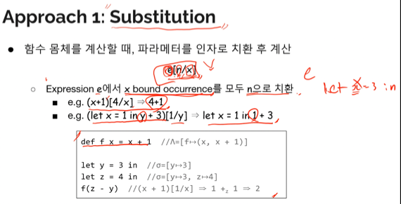
- e[n / x] 라는 것은 e에 나오는 모든 x를 n으로 치환한다는 뜻이다
- 다만 여기서 치환하는 대상은 파라미터를 bound 하는 애들 (파라미터에 대해 bound occurrence한 애들) 이다
- 즉, 함수의 몸체(e)안에 매개변수랑 동일한 이름으로 bind occurrence가 이루어지면 그 이후부터는 전부 shadowing되기 때문에 치환하면 안된다
- shadowing이 된 값이 변수의 값으로 매핑되어야 되는데 인자의 값이 변수의 매핑되게 되어 문제가 생긴다
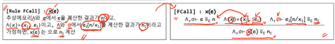
- 결과는 이렇게 나온다 - 여기서 중요한 점은 치환이기 때문에 e1을 계산할 때는 어떠한 메모리도 참조하지 않는다는 것이 중요하더라
접근2 - 가상 메모리 사용(Using Store)
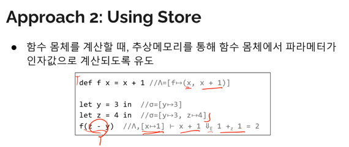
- 일반적으로 우리가 프로그램에서 함수가 동작하는 과정 - 매개변수도 변수니까 매개변수와 그의 값을 가상메모리(Store)에 업데이트시켜서 그 가상메모리로 계산을 하자
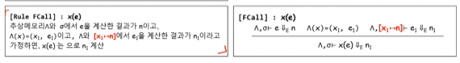
- 그에대한 결과다 - 여기서 또 중요한 점은 기존 e를 계산할때 사용한 가상메모리와 e1을 계산할때 사용한 메모리는 다르다는 점이다
- 새로운 메모리가 생성되어 매개변수가 드감
Scope
- 보통 언어는 이 둘중 하나의 scope개념을 가지고 설계된다
- Lexical(Static) scope : 컴파일 시점에 스코프가 정해짐
- Dynamic scope : 실행시점에 스코프가 정해짐
- 컴파일 시점이라는 것은 보통 한눈에 보면 어디까지가 볌위인지 알 수 있지만 실행시점이면 범위가 어디까지인지 한눈에 알기 힘듦
- 예시 - 함수 외부에서 binding된 변수가 함수 내부에서도 bound가 가능한 언어의 경우
- 위에서 가상 메모리를 사용한 함수의 호출에서 매개변수의 값을 계산할때와 함수의 몸체를 계산할때 별도의 메모리를 사용하는 것은 이 언어가 Lexical scope이기 때문인거다
- 일반적인 Lexical scope에서는 함수의 내부로 외부변수가 들어오지 않기 때문
- 따라서 Dynamic scope에서는 함수 외부의 변수가 내부로 들어오기 때문에 별도의 메모리를 사용하지 않는다
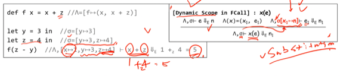
- Dynamic으로 설계했을 때의 모습이다. 보다시피 e1을 계산할때 메모리가 그냥 [] 이 아니고 시그마가 붙어있는걸 알 수 있다
- 졸라 강조하는거 보니 이 둘 개념 시험에 나오겠다 - 그리고 Substitution의 경우에도 Lexical과 Dynamic의 두가지로 모두 설계할 수 있다고 강조하는 거 보니 이거 저거 두개로 치환 구현하는거 시험에 나온다
List of Function
- 위에서는 함수가 반드시 하나만 나와야되는 언어를 정의했다 (없어도 안되고 2개이상이도 안됨)
- 따라서 이걸 0개 이상의 함수를 지원하는 언어로 바꾸면 다음과 같다
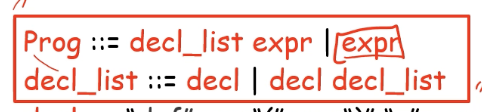
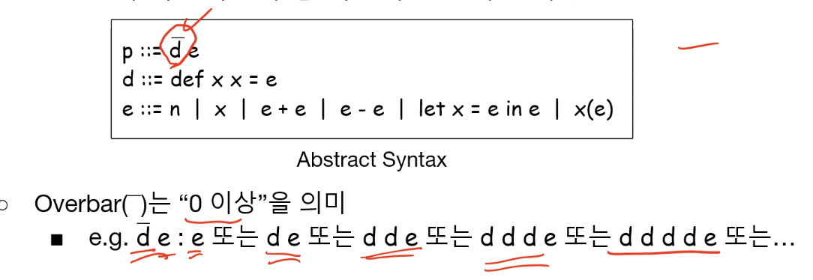
- 보면 d위에 언더바가 있는데 걍 0개 이상이라는 의미란다
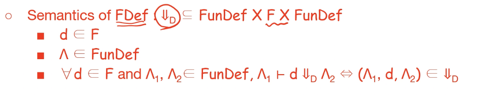
- 원래는 (D, FunDef)였는데 (FunDef, D, FunDef)로 바꿈
- 보면 마지막줄에 기존의 람다에서 새로운 함수선언 d를 추가한 새로운 람다로 계산되는 것을 알 수 있다
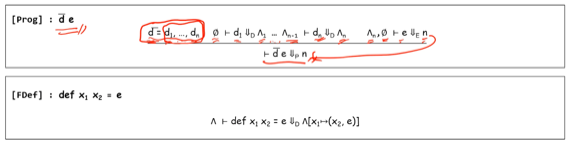
- 그리고 이렇게 바꿀 수 있다
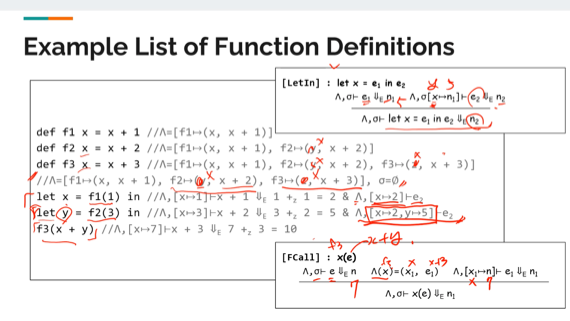
- 이거 여러번 연습할 것!! - 뒤에 있는 예제도 함께 - ㅈㄴ강조한다 이새끼
List of Parameters
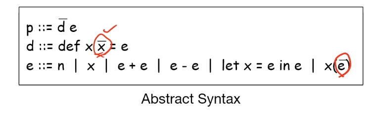
- 요래 바꾼다
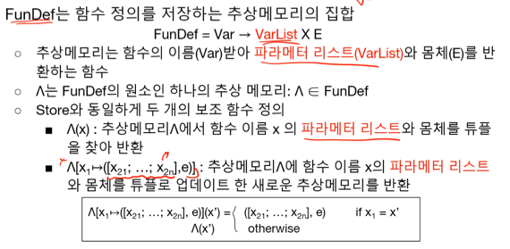
- 빨간부분이 바뀐거랜다 - 이제는 매개변수가 Var하나가 아니라 VarList인 것
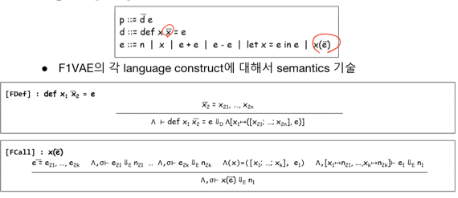
- 저 동그라미부분이 바뀐것으로 저기만 수정해주면 된다
- 시험공부할때 예제 다 꼼꼼히 해보면서 막히면 강의 참고해라 - 강의뒷쪽에 많이 나온다